4 Muestreo y estimaciones
4.1 Conceptos
- Población (universo) (\(U\)): La colección completa de los elementos de interés.
- Muestra (\(s\)): Un subcobjunto de la población de interés o el universo.
\[s \subset U\]
- Muestreo: El mecanismo utilizado para extraer la muestra del universo, en la estadística se valora principalmente a un mecanismo aleatorio, esto debido a las propiedades que este genera (Muestra valida estadísticamente).
- Inferencia: Es un área de la estadística que busca a partir de una muestra estadísticamente valida describir a la población de estudio. Mediante la inferencia descriptiva, inferencia predictiva y la inferencia causal.
- Parámetro: Una función sobre la población
\[\theta=f(U,X)\]
- Estadística: Una función sobre la muestra
\[Estadística=f(s,X)\]
- Estimador: Es una estadística, que tiene el objetivo de aproximar a un parámetro
\[\hat{\theta}=f(s,X)\]
Ejemplo.
En una población de estudiantes de tamaño \(N=10\), se tiene el gasto en transporte a la universidad en un día común. Se extrae una muestra de tamaño 4, proponer estimadores para el total del gasto en transporte.
x<-c(2,4,5,5,2,10,15,7,4,2)
sum(x)#parámetro del total## [1] 56s<-sample(x,4)
s<-c(5,5,2,7)
s2<-sample(x,4)
s2<-c(10,5,5,15)\[\hat{\theta}_1=\sum_s x_i+n*N =5+5+2+7+40=\{59,75\}\]
\[\hat{\theta}_2=n\sum_{s,<>}x_i=(5+2+7)*4=\{56,120\}\]
\[\hat{\theta}_3=\frac{1}{x_{max}}\prod_s x_i= \frac{5*5*2*7}{7}=\{50,250\}\] \[\hat{\theta}_4=\frac{N\sum_s x_i}{n}=N*\bar{x}=\frac{10*(5+5+2+7)}{4}=\{47.5,87.5\}\]
¿Cuántas muestras posibles se pueden construir en el ejercicio anterior?
Si las muestras son sin reposición la cantidad de muestras posibles es determinada por:
\[NCn=10C4=\frac{10!}{6!*4!}=210\]
combn(x,4)## [,1] [,2] [,3] [,4] [,5] [,6]
## [1,] 2 2 2 2 2 2
## [2,] 4 4 4 4 4 4
## [3,] 5 5 5 5 5 5
## [4,] 5 2 10 15 7 4
## [,7] [,8] [,9] [,10] [,11] [,12]
## [1,] 2 2 2 2 2 2
## [2,] 4 4 4 4 4 4
## [3,] 5 5 5 5 5 5
## [4,] 2 2 10 15 7 4
## [,13] [,14] [,15] [,16] [,17]
## [1,] 2 2 2 2 2
## [2,] 4 4 4 4 4
## [3,] 5 2 2 2 2
## [4,] 2 10 15 7 4
## [,18] [,19] [,20] [,21] [,22]
## [1,] 2 2 2 2 2
## [2,] 4 4 4 4 4
## [3,] 2 10 10 10 10
## [4,] 2 15 7 4 2
## [,23] [,24] [,25] [,26] [,27]
## [1,] 2 2 2 2 2
## [2,] 4 4 4 4 4
## [3,] 15 15 15 7 7
## [4,] 7 4 2 4 2
## [,28] [,29] [,30] [,31] [,32]
## [1,] 2 2 2 2 2
## [2,] 4 5 5 5 5
## [3,] 4 5 5 5 5
## [4,] 2 2 10 15 7
## [,33] [,34] [,35] [,36] [,37]
## [1,] 2 2 2 2 2
## [2,] 5 5 5 5 5
## [3,] 5 5 2 2 2
## [4,] 4 2 10 15 7
## [,38] [,39] [,40] [,41] [,42]
## [1,] 2 2 2 2 2
## [2,] 5 5 5 5 5
## [3,] 2 2 10 10 10
## [4,] 4 2 15 7 4
## [,43] [,44] [,45] [,46] [,47]
## [1,] 2 2 2 2 2
## [2,] 5 5 5 5 5
## [3,] 10 15 15 15 7
## [4,] 2 7 4 2 4
## [,48] [,49] [,50] [,51] [,52]
## [1,] 2 2 2 2 2
## [2,] 5 5 5 5 5
## [3,] 7 4 2 2 2
## [4,] 2 2 10 15 7
## [,53] [,54] [,55] [,56] [,57]
## [1,] 2 2 2 2 2
## [2,] 5 5 5 5 5
## [3,] 2 2 10 10 10
## [4,] 4 2 15 7 4
## [,58] [,59] [,60] [,61] [,62]
## [1,] 2 2 2 2 2
## [2,] 5 5 5 5 5
## [3,] 10 15 15 15 7
## [4,] 2 7 4 2 4
## [,63] [,64] [,65] [,66] [,67]
## [1,] 2 2 2 2 2
## [2,] 5 5 2 2 2
## [3,] 7 4 10 10 10
## [4,] 2 2 15 7 4
## [,68] [,69] [,70] [,71] [,72]
## [1,] 2 2 2 2 2
## [2,] 2 2 2 2 2
## [3,] 10 15 15 15 7
## [4,] 2 7 4 2 4
## [,73] [,74] [,75] [,76] [,77]
## [1,] 2 2 2 2 2
## [2,] 2 2 10 10 10
## [3,] 7 4 15 15 15
## [4,] 2 2 7 4 2
## [,78] [,79] [,80] [,81] [,82]
## [1,] 2 2 2 2 2
## [2,] 10 10 10 15 15
## [3,] 7 7 4 7 7
## [4,] 4 2 2 4 2
## [,83] [,84] [,85] [,86] [,87]
## [1,] 2 2 4 4 4
## [2,] 15 7 5 5 5
## [3,] 4 4 5 5 5
## [4,] 2 2 2 10 15
## [,88] [,89] [,90] [,91] [,92]
## [1,] 4 4 4 4 4
## [2,] 5 5 5 5 5
## [3,] 5 5 5 2 2
## [4,] 7 4 2 10 15
## [,93] [,94] [,95] [,96] [,97]
## [1,] 4 4 4 4 4
## [2,] 5 5 5 5 5
## [3,] 2 2 2 10 10
## [4,] 7 4 2 15 7
## [,98] [,99] [,100] [,101] [,102]
## [1,] 4 4 4 4 4
## [2,] 5 5 5 5 5
## [3,] 10 10 15 15 15
## [4,] 4 2 7 4 2
## [,103] [,104] [,105] [,106]
## [1,] 4 4 4 4
## [2,] 5 5 5 5
## [3,] 7 7 4 2
## [4,] 4 2 2 10
## [,107] [,108] [,109] [,110]
## [1,] 4 4 4 4
## [2,] 5 5 5 5
## [3,] 2 2 2 2
## [4,] 15 7 4 2
## [,111] [,112] [,113] [,114]
## [1,] 4 4 4 4
## [2,] 5 5 5 5
## [3,] 10 10 10 10
## [4,] 15 7 4 2
## [,115] [,116] [,117] [,118]
## [1,] 4 4 4 4
## [2,] 5 5 5 5
## [3,] 15 15 15 7
## [4,] 7 4 2 4
## [,119] [,120] [,121] [,122]
## [1,] 4 4 4 4
## [2,] 5 5 2 2
## [3,] 7 4 10 10
## [4,] 2 2 15 7
## [,123] [,124] [,125] [,126]
## [1,] 4 4 4 4
## [2,] 2 2 2 2
## [3,] 10 10 15 15
## [4,] 4 2 7 4
## [,127] [,128] [,129] [,130]
## [1,] 4 4 4 4
## [2,] 2 2 2 2
## [3,] 15 7 7 4
## [4,] 2 4 2 2
## [,131] [,132] [,133] [,134]
## [1,] 4 4 4 4
## [2,] 10 10 10 10
## [3,] 15 15 15 7
## [4,] 7 4 2 4
## [,135] [,136] [,137] [,138]
## [1,] 4 4 4 4
## [2,] 10 10 15 15
## [3,] 7 4 7 7
## [4,] 2 2 4 2
## [,139] [,140] [,141] [,142]
## [1,] 4 4 5 5
## [2,] 15 7 5 5
## [3,] 4 4 2 2
## [4,] 2 2 10 15
## [,143] [,144] [,145] [,146]
## [1,] 5 5 5 5
## [2,] 5 5 5 5
## [3,] 2 2 2 10
## [4,] 7 4 2 15
## [,147] [,148] [,149] [,150]
## [1,] 5 5 5 5
## [2,] 5 5 5 5
## [3,] 10 10 10 15
## [4,] 7 4 2 7
## [,151] [,152] [,153] [,154]
## [1,] 5 5 5 5
## [2,] 5 5 5 5
## [3,] 15 15 7 7
## [4,] 4 2 4 2
## [,155] [,156] [,157] [,158]
## [1,] 5 5 5 5
## [2,] 5 2 2 2
## [3,] 4 10 10 10
## [4,] 2 15 7 4
## [,159] [,160] [,161] [,162]
## [1,] 5 5 5 5
## [2,] 2 2 2 2
## [3,] 10 15 15 15
## [4,] 2 7 4 2
## [,163] [,164] [,165] [,166]
## [1,] 5 5 5 5
## [2,] 2 2 2 10
## [3,] 7 7 4 15
## [4,] 4 2 2 7
## [,167] [,168] [,169] [,170]
## [1,] 5 5 5 5
## [2,] 10 10 10 10
## [3,] 15 15 7 7
## [4,] 4 2 4 2
## [,171] [,172] [,173] [,174]
## [1,] 5 5 5 5
## [2,] 10 15 15 15
## [3,] 4 7 7 4
## [4,] 2 4 2 2
## [,175] [,176] [,177] [,178]
## [1,] 5 5 5 5
## [2,] 7 2 2 2
## [3,] 4 10 10 10
## [4,] 2 15 7 4
## [,179] [,180] [,181] [,182]
## [1,] 5 5 5 5
## [2,] 2 2 2 2
## [3,] 10 15 15 15
## [4,] 2 7 4 2
## [,183] [,184] [,185] [,186]
## [1,] 5 5 5 5
## [2,] 2 2 2 10
## [3,] 7 7 4 15
## [4,] 4 2 2 7
## [,187] [,188] [,189] [,190]
## [1,] 5 5 5 5
## [2,] 10 10 10 10
## [3,] 15 15 7 7
## [4,] 4 2 4 2
## [,191] [,192] [,193] [,194]
## [1,] 5 5 5 5
## [2,] 10 15 15 15
## [3,] 4 7 7 4
## [4,] 2 4 2 2
## [,195] [,196] [,197] [,198]
## [1,] 5 2 2 2
## [2,] 7 10 10 10
## [3,] 4 15 15 15
## [4,] 2 7 4 2
## [,199] [,200] [,201] [,202]
## [1,] 2 2 2 2
## [2,] 10 10 10 15
## [3,] 7 7 4 7
## [4,] 4 2 2 4
## [,203] [,204] [,205] [,206]
## [1,] 2 2 2 10
## [2,] 15 15 7 15
## [3,] 7 4 4 7
## [4,] 2 2 2 4
## [,207] [,208] [,209] [,210]
## [1,] 10 10 10 15
## [2,] 15 15 7 7
## [3,] 7 4 4 4
## [4,] 2 2 2 2choose(10,4)## [1] 210format(choose(800,20),scientific = F)## [1] "3729767602055710168420662226248440888622"4.2 Distribuciones muestrales
Es la forma o el comportamiento de las muestras posibles respecto algún estimador, su importancia se debe a la posibilidad de estudiar el fenómeno completo e identificar patrones.
ss<-combn(x,4)
t1<-apply(ss,2,sum)+4*10
t2<-sapply(apply(ss,2,unique), sum)*4
t3<-apply(ss,2,prod)/apply(ss,2,max)
t4<-apply(ss,2,mean)*10
tt<-cbind(t1,t2,t3,t4)
#representante
apply(tt,2,mean)## t1 t2 t3 t4
## 62.40000 81.86667 58.27619 56.00000#variabilidad
apply(tt,2,sd)## t1 t2 t3
## 6.431978 30.140045 56.625437
## t4
## 16.079944#gráfica
par(mfrow=c(2,2))
hist(t1,xlim=c(0,100));hist(t2,xlim=c(0,100));hist(t3,xlim=c(0,100));hist(t4,xlim=c(0,100))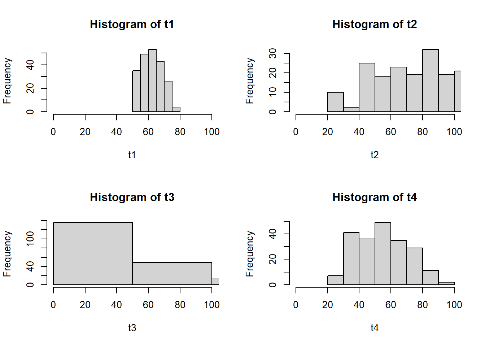
boxplot(t1);boxplot(t2);boxplot(t3);boxplot(t4)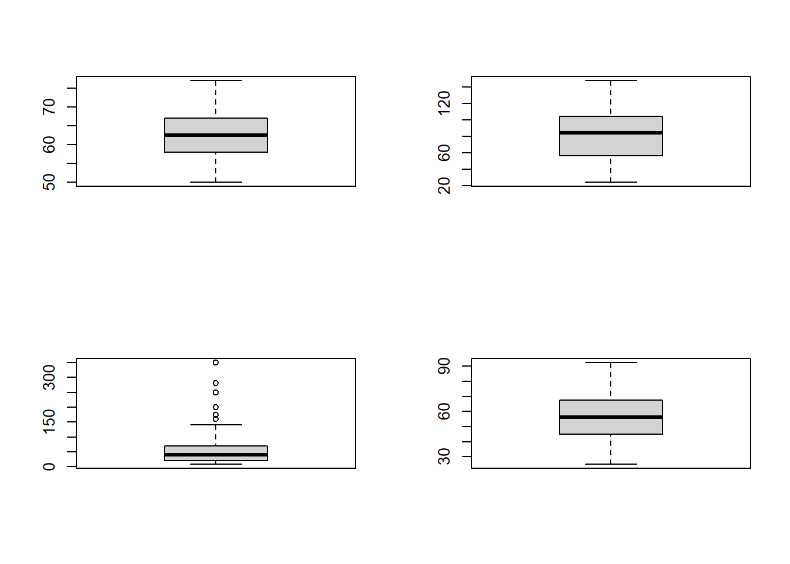
plot(density(t1));abline(v=56);plot(density(t2));abline(v=56);plot(density(t3));abline(v=56);plot(density(t4));abline(v=56)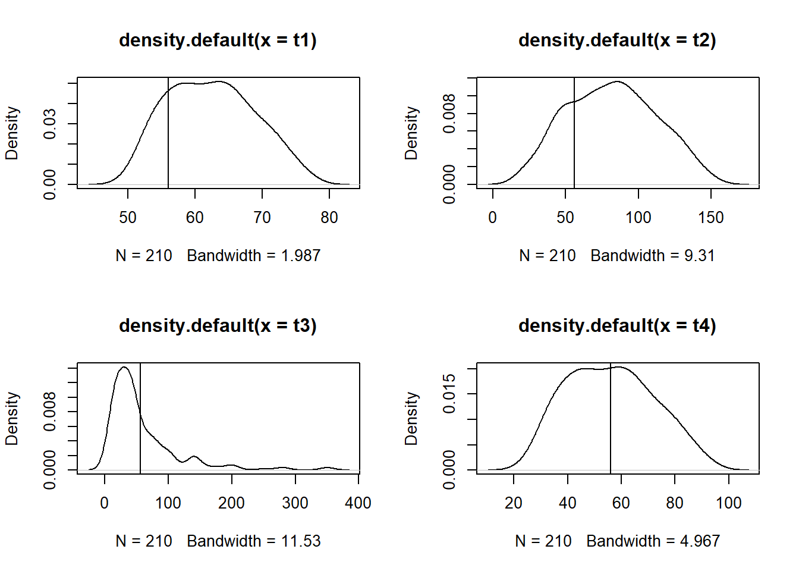
Los estimadores \(\hat{\theta}\) finalmente son variables aleatorias ya que a priori no sabemos el resultado antes de sacar la muestra respectiva. Cuyo recorrido de esta variable aleatoria es dada por los distintos valores que obtienen de las muestras posibles.
Existen dos criterios prácticos para calificar la calidad de un estimador:
- Estimador insesgado (más relevante): Se refiere a que el centro de la distribución es el parámetro de interés, de manera formal:
\[E[\hat{\theta}]=\theta\]
- Estimador eficiente: La idea de eficiencia en los estimadores se mide con la varianza del estimador, el estimador con menor varianza es el más eficiente. Por ejemplo:
\[V(\hat{\theta}_1)>V(\hat{\theta}_2)\]
\(\hat{\theta}_2\) es más eficiente que \(\hat{\theta}_1\)
Existen estimadores clásicos y frecuentemente usados que son estimadores insesgados, entre ellos:
4.2.1 Media
- Parámetro
\[\mu_x=\frac{\sum_U x_i}{N}\]
- Estimador (media muestral)
\[\bar{x}=\frac{\sum_s x_i}{n}\]
4.2.2 Diferencia de medias
Es una medida que compara dos poblaciones
- Parámetro
\[\mu_1-\mu_2=\frac{\sum_{U_1} x_i}{N_1}-\frac{\sum_{U_2} x_i}{N_2}\]
- Estimador (medias muestrales)
\[\bar{x}_1-\bar{x}_2=\frac{\sum_{s_1} x_i}{n_1}-\frac{\sum_{s_2} x_i}{n_2}\] ### Total
- Parámetro
\[t_x=\sum_U x_i\]
- Estimador
\[\hat{t}_x=N*\frac{\sum_s x_i}{n}=N*\bar{x}\]
4.2.3 Proporción
Es una medida que identifica la proporción de participación de alguna característica de interés
- Parámetro
\[P_A=\frac{\#A}{N}=\frac{\sum_U x_i}{N}; \quad \{x_i=1 \quad i \in A, x_i=0 \quad eoc\}\]
- Estimador
\[\hat{P}_A=\frac{\#a}{n}=\frac{\sum_s x_i}{n}; \quad \{x_i=1 \quad i \in A, x_i=0 \quad eoc\}\]
4.3 Teorema del limite central
Si \(\bar{x}\) es la media muestral de una muestra aleatoria de tamaño \(n\) tomada de una población \(U\) con media poblacional \(\mu_x\) y varianza finita (se puede calcular) \(\sigma_x^2\). Entonces la forma limite de la distribución de \(\bar{x}\) a medida que \(n\rightarrow \infty\) crece, se puede asegurar:
\[\bar{x}\sim N\left(\mu=\mu_x,\sigma^2=\frac{\sigma^2_x}{n}\right)\]
Nota: Esta idea de \(n\) grande, en estadística tradicionalmente se toma como “grande” cuando \(n\geq 30\), hay textos que plantean \(n\geq 20\).
Ejemplo:
Recordar la idea de una distribución muestral:
x<-c(2,4,5,5,2,10,15,7,4,2)
n<-4
choose(10,4)## [1] 210ss<-combn(x,4)
ss## [,1] [,2] [,3] [,4] [,5] [,6]
## [1,] 2 2 2 2 2 2
## [2,] 4 4 4 4 4 4
## [3,] 5 5 5 5 5 5
## [4,] 5 2 10 15 7 4
## [,7] [,8] [,9] [,10] [,11] [,12]
## [1,] 2 2 2 2 2 2
## [2,] 4 4 4 4 4 4
## [3,] 5 5 5 5 5 5
## [4,] 2 2 10 15 7 4
## [,13] [,14] [,15] [,16] [,17]
## [1,] 2 2 2 2 2
## [2,] 4 4 4 4 4
## [3,] 5 2 2 2 2
## [4,] 2 10 15 7 4
## [,18] [,19] [,20] [,21] [,22]
## [1,] 2 2 2 2 2
## [2,] 4 4 4 4 4
## [3,] 2 10 10 10 10
## [4,] 2 15 7 4 2
## [,23] [,24] [,25] [,26] [,27]
## [1,] 2 2 2 2 2
## [2,] 4 4 4 4 4
## [3,] 15 15 15 7 7
## [4,] 7 4 2 4 2
## [,28] [,29] [,30] [,31] [,32]
## [1,] 2 2 2 2 2
## [2,] 4 5 5 5 5
## [3,] 4 5 5 5 5
## [4,] 2 2 10 15 7
## [,33] [,34] [,35] [,36] [,37]
## [1,] 2 2 2 2 2
## [2,] 5 5 5 5 5
## [3,] 5 5 2 2 2
## [4,] 4 2 10 15 7
## [,38] [,39] [,40] [,41] [,42]
## [1,] 2 2 2 2 2
## [2,] 5 5 5 5 5
## [3,] 2 2 10 10 10
## [4,] 4 2 15 7 4
## [,43] [,44] [,45] [,46] [,47]
## [1,] 2 2 2 2 2
## [2,] 5 5 5 5 5
## [3,] 10 15 15 15 7
## [4,] 2 7 4 2 4
## [,48] [,49] [,50] [,51] [,52]
## [1,] 2 2 2 2 2
## [2,] 5 5 5 5 5
## [3,] 7 4 2 2 2
## [4,] 2 2 10 15 7
## [,53] [,54] [,55] [,56] [,57]
## [1,] 2 2 2 2 2
## [2,] 5 5 5 5 5
## [3,] 2 2 10 10 10
## [4,] 4 2 15 7 4
## [,58] [,59] [,60] [,61] [,62]
## [1,] 2 2 2 2 2
## [2,] 5 5 5 5 5
## [3,] 10 15 15 15 7
## [4,] 2 7 4 2 4
## [,63] [,64] [,65] [,66] [,67]
## [1,] 2 2 2 2 2
## [2,] 5 5 2 2 2
## [3,] 7 4 10 10 10
## [4,] 2 2 15 7 4
## [,68] [,69] [,70] [,71] [,72]
## [1,] 2 2 2 2 2
## [2,] 2 2 2 2 2
## [3,] 10 15 15 15 7
## [4,] 2 7 4 2 4
## [,73] [,74] [,75] [,76] [,77]
## [1,] 2 2 2 2 2
## [2,] 2 2 10 10 10
## [3,] 7 4 15 15 15
## [4,] 2 2 7 4 2
## [,78] [,79] [,80] [,81] [,82]
## [1,] 2 2 2 2 2
## [2,] 10 10 10 15 15
## [3,] 7 7 4 7 7
## [4,] 4 2 2 4 2
## [,83] [,84] [,85] [,86] [,87]
## [1,] 2 2 4 4 4
## [2,] 15 7 5 5 5
## [3,] 4 4 5 5 5
## [4,] 2 2 2 10 15
## [,88] [,89] [,90] [,91] [,92]
## [1,] 4 4 4 4 4
## [2,] 5 5 5 5 5
## [3,] 5 5 5 2 2
## [4,] 7 4 2 10 15
## [,93] [,94] [,95] [,96] [,97]
## [1,] 4 4 4 4 4
## [2,] 5 5 5 5 5
## [3,] 2 2 2 10 10
## [4,] 7 4 2 15 7
## [,98] [,99] [,100] [,101] [,102]
## [1,] 4 4 4 4 4
## [2,] 5 5 5 5 5
## [3,] 10 10 15 15 15
## [4,] 4 2 7 4 2
## [,103] [,104] [,105] [,106]
## [1,] 4 4 4 4
## [2,] 5 5 5 5
## [3,] 7 7 4 2
## [4,] 4 2 2 10
## [,107] [,108] [,109] [,110]
## [1,] 4 4 4 4
## [2,] 5 5 5 5
## [3,] 2 2 2 2
## [4,] 15 7 4 2
## [,111] [,112] [,113] [,114]
## [1,] 4 4 4 4
## [2,] 5 5 5 5
## [3,] 10 10 10 10
## [4,] 15 7 4 2
## [,115] [,116] [,117] [,118]
## [1,] 4 4 4 4
## [2,] 5 5 5 5
## [3,] 15 15 15 7
## [4,] 7 4 2 4
## [,119] [,120] [,121] [,122]
## [1,] 4 4 4 4
## [2,] 5 5 2 2
## [3,] 7 4 10 10
## [4,] 2 2 15 7
## [,123] [,124] [,125] [,126]
## [1,] 4 4 4 4
## [2,] 2 2 2 2
## [3,] 10 10 15 15
## [4,] 4 2 7 4
## [,127] [,128] [,129] [,130]
## [1,] 4 4 4 4
## [2,] 2 2 2 2
## [3,] 15 7 7 4
## [4,] 2 4 2 2
## [,131] [,132] [,133] [,134]
## [1,] 4 4 4 4
## [2,] 10 10 10 10
## [3,] 15 15 15 7
## [4,] 7 4 2 4
## [,135] [,136] [,137] [,138]
## [1,] 4 4 4 4
## [2,] 10 10 15 15
## [3,] 7 4 7 7
## [4,] 2 2 4 2
## [,139] [,140] [,141] [,142]
## [1,] 4 4 5 5
## [2,] 15 7 5 5
## [3,] 4 4 2 2
## [4,] 2 2 10 15
## [,143] [,144] [,145] [,146]
## [1,] 5 5 5 5
## [2,] 5 5 5 5
## [3,] 2 2 2 10
## [4,] 7 4 2 15
## [,147] [,148] [,149] [,150]
## [1,] 5 5 5 5
## [2,] 5 5 5 5
## [3,] 10 10 10 15
## [4,] 7 4 2 7
## [,151] [,152] [,153] [,154]
## [1,] 5 5 5 5
## [2,] 5 5 5 5
## [3,] 15 15 7 7
## [4,] 4 2 4 2
## [,155] [,156] [,157] [,158]
## [1,] 5 5 5 5
## [2,] 5 2 2 2
## [3,] 4 10 10 10
## [4,] 2 15 7 4
## [,159] [,160] [,161] [,162]
## [1,] 5 5 5 5
## [2,] 2 2 2 2
## [3,] 10 15 15 15
## [4,] 2 7 4 2
## [,163] [,164] [,165] [,166]
## [1,] 5 5 5 5
## [2,] 2 2 2 10
## [3,] 7 7 4 15
## [4,] 4 2 2 7
## [,167] [,168] [,169] [,170]
## [1,] 5 5 5 5
## [2,] 10 10 10 10
## [3,] 15 15 7 7
## [4,] 4 2 4 2
## [,171] [,172] [,173] [,174]
## [1,] 5 5 5 5
## [2,] 10 15 15 15
## [3,] 4 7 7 4
## [4,] 2 4 2 2
## [,175] [,176] [,177] [,178]
## [1,] 5 5 5 5
## [2,] 7 2 2 2
## [3,] 4 10 10 10
## [4,] 2 15 7 4
## [,179] [,180] [,181] [,182]
## [1,] 5 5 5 5
## [2,] 2 2 2 2
## [3,] 10 15 15 15
## [4,] 2 7 4 2
## [,183] [,184] [,185] [,186]
## [1,] 5 5 5 5
## [2,] 2 2 2 10
## [3,] 7 7 4 15
## [4,] 4 2 2 7
## [,187] [,188] [,189] [,190]
## [1,] 5 5 5 5
## [2,] 10 10 10 10
## [3,] 15 15 7 7
## [4,] 4 2 4 2
## [,191] [,192] [,193] [,194]
## [1,] 5 5 5 5
## [2,] 10 15 15 15
## [3,] 4 7 7 4
## [4,] 2 4 2 2
## [,195] [,196] [,197] [,198]
## [1,] 5 2 2 2
## [2,] 7 10 10 10
## [3,] 4 15 15 15
## [4,] 2 7 4 2
## [,199] [,200] [,201] [,202]
## [1,] 2 2 2 2
## [2,] 10 10 10 15
## [3,] 7 7 4 7
## [4,] 4 2 2 4
## [,203] [,204] [,205] [,206]
## [1,] 2 2 2 10
## [2,] 15 15 7 15
## [3,] 7 4 4 7
## [4,] 2 2 2 4
## [,207] [,208] [,209] [,210]
## [1,] 10 10 10 15
## [2,] 15 15 7 7
## [3,] 7 4 4 4
## [4,] 2 2 2 2#distribución de la media
mm<-apply(ss,2,mean)
mm## [1] 4.00 3.25 5.25 6.50 4.50 3.75
## [7] 3.25 3.25 5.25 6.50 4.50 3.75
## [13] 3.25 4.50 5.75 3.75 3.00 2.50
## [19] 7.75 5.75 5.00 4.50 7.00 6.25
## [25] 5.75 4.25 3.75 3.00 3.50 5.50
## [31] 6.75 4.75 4.00 3.50 4.75 6.00
## [37] 4.00 3.25 2.75 8.00 6.00 5.25
## [43] 4.75 7.25 6.50 6.00 4.50 4.00
## [49] 3.25 4.75 6.00 4.00 3.25 2.75
## [55] 8.00 6.00 5.25 4.75 7.25 6.50
## [61] 6.00 4.50 4.00 3.25 7.25 5.25
## [67] 4.50 4.00 6.50 5.75 5.25 3.75
## [73] 3.25 2.50 8.50 7.75 7.25 5.75
## [79] 5.25 4.50 7.00 6.50 5.75 3.75
## [85] 4.00 6.00 7.25 5.25 4.50 4.00
## [91] 5.25 6.50 4.50 3.75 3.25 8.50
## [97] 6.50 5.75 5.25 7.75 7.00 6.50
## [103] 5.00 4.50 3.75 5.25 6.50 4.50
## [109] 3.75 3.25 8.50 6.50 5.75 5.25
## [115] 7.75 7.00 6.50 5.00 4.50 3.75
## [121] 7.75 5.75 5.00 4.50 7.00 6.25
## [127] 5.75 4.25 3.75 3.00 9.00 8.25
## [133] 7.75 6.25 5.75 5.00 7.50 7.00
## [139] 6.25 4.25 5.50 6.75 4.75 4.00
## [145] 3.50 8.75 6.75 6.00 5.50 8.00
## [151] 7.25 6.75 5.25 4.75 4.00 8.00
## [157] 6.00 5.25 4.75 7.25 6.50 6.00
## [163] 4.50 4.00 3.25 9.25 8.50 8.00
## [169] 6.50 6.00 5.25 7.75 7.25 6.50
## [175] 4.50 8.00 6.00 5.25 4.75 7.25
## [181] 6.50 6.00 4.50 4.00 3.25 9.25
## [187] 8.50 8.00 6.50 6.00 5.25 7.75
## [193] 7.25 6.50 4.50 8.50 7.75 7.25
## [199] 5.75 5.25 4.50 7.00 6.50 5.75
## [205] 3.75 9.00 8.50 7.75 5.75 7.00hist(mm)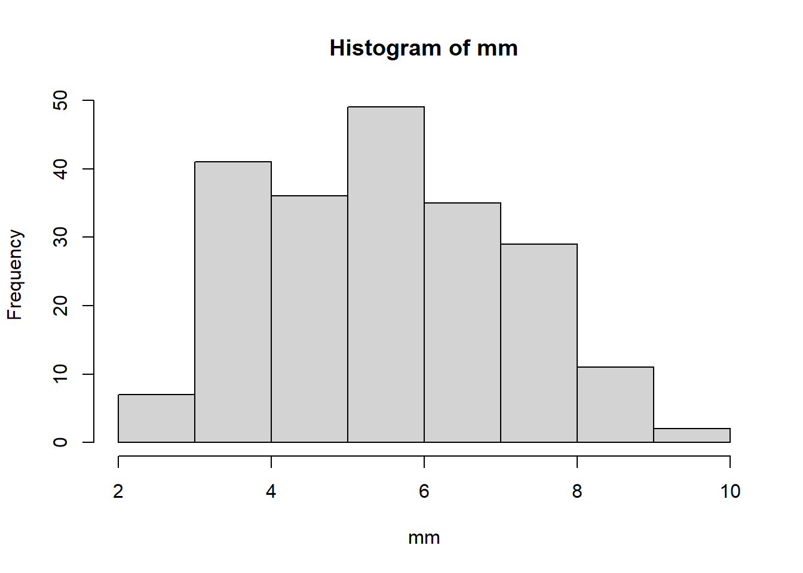
mean(x) #parámetro media poblacional## [1] 5.6mean(mm) # Insesgadez## [1] 5.6Vamos a simular el teorema del limite central.
Imaginar que se tiene una población de 500 gatos y se quiere observar el peso en kilogramos.
N<-500
set.seed(855)
xx<-rnorm(N, 4,1.2)
xx<-round(xx,1)
xx## [1] 4.0 3.8 6.1 6.8 4.9 3.6 4.2 5.3
## [9] 2.7 5.4 3.3 4.9 4.0 2.4 3.0 2.5
## [17] 5.6 4.0 3.4 4.6 1.4 3.5 5.0 3.8
## [25] 5.1 3.0 5.1 3.7 3.9 3.3 4.2 4.4
## [33] 3.2 4.4 5.3 3.5 3.1 4.2 5.7 2.2
## [41] 5.2 5.2 3.2 5.4 2.6 5.5 3.2 3.0
## [49] 4.3 3.5 5.7 2.9 5.4 3.6 1.4 4.6
## [57] 4.3 6.3 2.5 4.7 2.8 3.9 5.7 5.0
## [65] 4.8 3.8 5.9 4.4 4.5 6.4 4.3 2.4
## [73] 4.2 3.6 4.8 4.4 5.7 5.0 6.1 4.3
## [81] 4.5 6.0 2.8 7.0 6.2 4.6 5.0 1.8
## [89] 4.0 6.2 3.2 3.3 4.6 4.4 2.1 2.3
## [97] 2.6 0.7 3.9 5.4 1.6 4.4 2.6 3.2
## [105] 3.5 1.2 6.1 3.7 3.8 7.4 4.5 3.1
## [113] 2.4 3.6 2.6 3.7 4.7 3.9 2.2 4.5
## [121] 4.2 4.1 4.9 5.1 5.9 3.2 4.9 3.1
## [129] 3.0 6.2 6.6 3.9 4.2 3.5 3.2 4.1
## [137] 2.9 3.2 4.8 4.5 5.3 4.1 2.8 3.7
## [145] 3.6 5.2 4.1 5.2 4.1 1.4 4.7 3.8
## [153] 4.9 3.1 5.9 5.7 2.4 4.3 4.6 3.1
## [161] 3.9 4.4 4.4 2.1 4.0 3.5 4.8 3.4
## [169] 3.9 5.6 2.5 3.1 3.2 5.5 4.5 2.8
## [177] 4.7 4.0 3.5 4.5 4.0 4.6 4.4 3.5
## [185] 4.7 4.4 4.4 5.0 2.8 6.6 3.9 3.5
## [193] 5.1 6.0 5.1 4.6 2.0 4.2 3.5 0.3
## [201] 4.0 2.7 4.8 3.3 3.1 6.3 0.9 3.7
## [209] 2.8 4.1 6.3 3.7 2.3 6.2 5.5 3.6
## [217] 1.9 0.7 3.5 4.2 4.7 2.5 3.1 3.6
## [225] 3.9 1.5 6.0 5.3 4.8 2.3 5.5 1.8
## [233] 4.7 2.8 4.2 4.9 3.2 5.0 4.8 3.2
## [241] 2.4 4.4 4.2 3.3 2.5 4.0 4.7 4.8
## [249] 2.4 2.8 4.5 3.9 4.3 2.5 4.3 3.1
## [257] 2.7 2.7 3.9 2.7 2.4 3.9 2.4 2.7
## [265] 4.3 4.0 3.3 3.9 4.3 3.7 4.1 4.9
## [273] 5.1 6.2 4.5 6.6 5.9 3.7 6.3 3.2
## [281] 3.6 4.0 2.2 1.5 4.9 5.0 4.3 5.8
## [289] 2.3 3.7 3.6 5.1 2.4 2.1 2.7 5.3
## [297] 4.1 4.0 4.1 5.6 2.7 4.7 4.4 4.8
## [305] 7.0 6.0 3.5 3.8 4.6 4.3 4.9 4.5
## [313] 3.5 3.3 3.9 4.2 5.5 2.3 3.4 4.1
## [321] 2.9 5.2 3.8 6.4 3.3 3.9 4.1 1.6
## [329] 1.9 5.2 1.2 4.3 5.6 5.6 2.3 1.4
## [337] 2.6 5.3 2.4 5.2 5.6 2.7 5.1 4.2
## [345] 4.4 3.4 3.4 5.1 3.4 5.7 2.1 5.1
## [353] 4.6 1.8 5.9 5.4 0.9 4.1 6.0 5.5
## [361] 2.6 4.8 3.9 4.4 1.2 4.5 4.0 5.2
## [369] 5.1 3.3 3.1 2.7 4.2 4.5 5.9 3.7
## [377] 4.8 4.8 4.6 5.0 3.6 4.5 6.1 3.7
## [385] 3.3 3.9 3.5 6.5 2.5 2.6 2.8 4.7
## [393] 4.6 5.3 4.1 6.6 2.3 5.6 4.6 4.9
## [401] 3.7 5.5 4.1 2.5 2.6 4.6 2.8 4.8
## [409] 2.9 1.0 4.4 4.2 4.8 5.7 3.4 5.1
## [417] 5.7 5.1 3.9 4.4 5.0 5.1 1.5 4.9
## [425] 6.3 5.7 3.3 6.4 4.0 6.1 5.2 3.8
## [433] 3.0 2.9 4.1 5.1 4.2 2.7 2.7 3.0
## [441] 2.2 3.6 5.5 4.2 2.7 4.2 4.7 4.5
## [449] 4.9 3.8 3.1 3.3 3.6 5.2 5.6 4.4
## [457] 3.5 3.6 3.3 3.7 1.9 1.4 4.4 3.9
## [465] 2.9 5.5 3.2 3.8 4.6 1.6 4.7 1.0
## [473] 4.3 4.5 2.2 4.6 3.0 4.3 5.4 5.3
## [481] 2.5 6.5 3.6 5.0 4.1 6.9 4.1 6.0
## [489] 4.4 3.5 5.2 3.6 2.7 2.7 4.9 3.7
## [497] 4.6 2.0 3.9 2.5n<-40
format(choose(N,n),scientific = F)# muestras posibles## [1] "224426968106501454848008488044444424624268244444206040840486"Como no es posible estudiar a todas las muestras posibles, debido a una limitación computacional se va a obtener y estudiar una parte de estas distribuciones muestrales.
k<-1000 # parte de las muestras posibles
mm<-NULL
for(i in 1:k){
maux<-sample(xx,n)
mm[i]<-mean(maux)
}
mm## [1] 3.8400 4.0325 3.6675 3.9625
## [5] 4.1100 3.7375 4.1450 4.1175
## [9] 3.7425 3.8675 3.9425 3.9000
## [13] 4.0075 3.9650 4.0200 4.5675
## [17] 3.9075 3.9700 3.8900 4.0775
## [21] 4.0400 3.9025 4.2075 4.1950
## [25] 3.9825 4.2375 4.0050 4.1150
## [29] 4.1075 4.0025 4.4175 3.6750
## [33] 3.9700 4.3025 3.9575 3.8550
## [37] 4.0550 4.1425 3.8625 4.0575
## [41] 4.1200 3.7825 3.8250 3.7475
## [45] 4.0925 4.2150 3.8025 4.1325
## [49] 4.0475 3.8825 4.0525 4.2300
## [53] 3.9400 4.0450 3.9000 4.0600
## [57] 4.1325 4.1575 3.9075 4.0250
## [61] 3.9975 3.7975 4.0825 4.0650
## [65] 3.8000 3.9700 4.0975 4.0550
## [69] 3.4575 4.0250 3.7925 3.8850
## [73] 3.8250 3.9475 4.0450 3.7250
## [77] 4.0600 3.6625 3.9325 4.7300
## [81] 3.9775 4.3350 4.1875 3.9175
## [85] 3.7650 3.9325 4.0975 3.9200
## [89] 3.7250 3.7725 4.1375 4.0175
## [93] 4.0300 4.1675 3.9400 3.7875
## [97] 4.0725 4.0700 4.1875 3.9625
## [101] 4.0550 4.1175 3.9325 4.4075
## [105] 3.8375 4.1750 4.2500 3.9550
## [109] 4.1550 3.8350 3.9800 4.1225
## [113] 3.6375 3.9450 3.8875 4.3850
## [117] 4.0175 4.1175 3.8850 4.2700
## [121] 4.2975 4.1250 4.0375 3.7375
## [125] 3.7600 4.3725 4.1350 3.9850
## [129] 4.1525 3.8725 4.4400 4.3250
## [133] 3.9250 4.1650 4.1500 3.7600
## [137] 3.9550 4.0050 3.9550 4.1650
## [141] 4.4175 4.2675 3.8725 4.3250
## [145] 3.8850 4.2150 4.1775 3.7950
## [149] 3.5875 3.8950 3.8375 4.3425
## [153] 3.9850 4.4450 4.1500 3.7125
## [157] 4.0575 3.9375 4.2625 4.4575
## [161] 3.7300 3.7900 3.8625 3.9850
## [165] 4.0275 3.6825 3.8200 4.0775
## [169] 3.9400 4.0925 4.1700 4.2625
## [173] 4.0400 3.9550 4.2800 4.0975
## [177] 4.0750 4.0650 4.1600 3.8200
## [181] 4.2075 3.9075 4.3075 4.1350
## [185] 3.7950 4.4975 4.0050 4.0450
## [189] 4.2450 3.8875 3.8375 4.0650
## [193] 3.7375 4.1300 4.2475 3.9500
## [197] 4.0500 3.8000 4.3450 3.9275
## [201] 3.9425 4.0200 3.7850 4.0825
## [205] 4.1375 3.9100 4.1300 3.8650
## [209] 3.8400 4.3450 4.0050 3.7225
## [213] 4.3250 4.4775 4.1975 3.9350
## [217] 4.1000 4.2625 3.7825 4.3450
## [221] 3.8775 3.9975 4.0525 4.3325
## [225] 3.8275 4.0125 3.6875 4.2425
## [229] 3.8575 3.6700 4.0675 3.9325
## [233] 4.0825 4.1925 3.8600 4.3700
## [237] 3.9000 4.3125 4.0125 3.8500
## [241] 4.0725 3.9725 4.1225 3.6950
## [245] 3.9575 3.9050 3.8900 4.0975
## [249] 3.8350 3.8800 3.7500 4.0900
## [253] 4.0075 4.0750 3.9125 4.2025
## [257] 3.9625 3.9700 3.9775 4.0300
## [261] 4.1400 3.9175 4.0125 4.3950
## [265] 3.6625 3.8175 4.0375 3.7575
## [269] 4.0225 4.2575 4.2600 3.4650
## [273] 3.8475 4.0800 3.9325 3.9425
## [277] 3.8175 3.8525 4.6000 3.7900
## [281] 4.0900 4.0825 3.7650 4.1225
## [285] 4.0650 3.8325 4.0575 3.7300
## [289] 3.9625 4.4850 4.1200 4.1525
## [293] 3.8025 4.1250 4.1675 4.2375
## [297] 3.8150 4.0350 4.3575 4.1900
## [301] 3.8900 4.0900 3.8925 4.0950
## [305] 4.2050 3.8900 3.8350 4.2050
## [309] 3.8875 3.6325 4.5150 4.1975
## [313] 4.1100 4.0475 3.8600 4.1125
## [317] 4.1200 4.0900 3.8675 4.0100
## [321] 3.9625 4.1300 4.0350 3.9500
## [325] 4.3500 4.4375 3.9250 3.7875
## [329] 4.2175 4.1975 4.1500 3.9625
## [333] 4.0925 4.5075 4.2475 4.0750
## [337] 4.5625 4.0300 4.1475 4.1175
## [341] 3.9750 4.2425 4.0250 4.1725
## [345] 4.1825 4.2525 3.9925 4.2725
## [349] 3.9025 4.0375 4.0900 4.0550
## [353] 3.9100 4.2125 3.6725 4.1925
## [357] 3.9825 4.4400 3.7075 3.9825
## [361] 3.7000 3.9975 4.1475 4.0625
## [365] 3.5075 3.6225 3.6875 4.3575
## [369] 3.9975 3.7950 4.2100 4.2500
## [373] 3.8175 3.7300 4.1850 4.3575
## [377] 4.1750 3.6375 4.1950 3.9525
## [381] 3.8225 4.0600 3.9350 3.9650
## [385] 4.0600 4.1550 4.0450 3.9075
## [389] 3.9175 4.3700 4.0025 4.2175
## [393] 3.9625 4.3975 4.1400 4.3625
## [397] 4.2375 3.9075 3.8525 4.1250
## [401] 3.8950 3.9475 3.8725 4.0100
## [405] 4.2175 4.1700 3.9400 4.0325
## [409] 4.1150 4.3025 3.7925 3.9575
## [413] 4.1375 4.1400 3.8175 3.8700
## [417] 3.9525 4.1575 4.0600 4.0825
## [421] 3.8150 3.8100 3.6300 3.7150
## [425] 3.7925 4.0775 3.9625 4.0550
## [429] 3.8175 4.1225 4.0125 3.7900
## [433] 3.9025 4.2125 3.9450 4.5725
## [437] 4.0950 4.2775 3.8275 4.4175
## [441] 4.1025 3.9050 3.7425 4.2425
## [445] 4.1525 3.8100 4.3850 3.9850
## [449] 4.2475 4.0675 3.9375 3.8200
## [453] 4.0575 3.9600 3.7200 3.8150
## [457] 3.8975 4.0150 4.1675 4.1325
## [461] 4.0100 4.1350 3.8750 4.2600
## [465] 4.2300 3.5800 3.8450 3.9925
## [469] 3.9600 4.2025 3.7875 4.3750
## [473] 3.9350 4.2600 4.1350 4.2000
## [477] 4.2050 3.9475 4.0425 4.1400
## [481] 4.0975 4.3225 3.5725 4.3450
## [485] 4.0250 3.8250 4.1625 4.3050
## [489] 3.8975 4.2950 3.9175 3.9400
## [493] 3.6500 3.8300 3.9025 4.1825
## [497] 3.9200 4.2975 3.7675 4.2300
## [501] 4.1300 4.2275 4.1100 3.8325
## [505] 4.1275 3.9875 4.0100 4.2275
## [509] 4.0275 4.2275 3.9725 4.1775
## [513] 3.6800 4.3125 3.9425 4.3825
## [517] 4.0650 4.4725 4.4600 4.0700
## [521] 3.9825 4.2125 4.3325 4.1225
## [525] 3.8975 4.2950 4.3475 4.1125
## [529] 3.8075 3.9500 4.1725 4.0425
## [533] 4.1450 3.8600 4.1200 4.1200
## [537] 4.3625 4.0475 4.2575 3.8375
## [541] 4.2075 3.8650 3.9700 3.9750
## [545] 3.9125 4.3950 3.9675 4.0400
## [549] 3.9250 3.6800 3.9975 3.9550
## [553] 4.0850 3.8775 3.8475 4.4525
## [557] 4.3250 4.0775 3.9825 3.8425
## [561] 3.8350 4.3450 4.0775 4.1575
## [565] 4.1175 3.9550 4.0600 3.9775
## [569] 4.1225 4.2125 3.8050 3.9475
## [573] 4.3075 3.7300 4.1775 4.0425
## [577] 3.8825 4.2700 3.8825 4.0850
## [581] 3.9200 4.1150 3.8975 3.7775
## [585] 4.2675 4.0300 4.0875 3.8175
## [589] 3.7775 4.2900 4.1650 3.7525
## [593] 4.2300 3.9150 3.8775 3.8075
## [597] 3.7900 3.9525 3.9575 4.3650
## [601] 4.2325 3.9000 4.2475 4.0600
## [605] 4.4425 4.0525 3.9250 3.7425
## [609] 3.9300 4.3350 4.0475 3.9950
## [613] 3.8275 3.9650 3.7575 4.2200
## [617] 4.1350 4.0375 3.8200 3.7725
## [621] 4.0350 3.9850 3.9075 4.3125
## [625] 3.9825 4.2325 4.1725 4.0700
## [629] 4.0250 3.9925 3.7075 3.9350
## [633] 3.8450 3.8075 4.3650 3.9675
## [637] 3.9600 4.1275 3.9975 4.1825
## [641] 4.0350 4.1425 4.0700 4.2950
## [645] 3.9475 3.8800 3.8100 4.3700
## [649] 4.1200 3.8600 4.0625 3.8025
## [653] 3.8400 3.8825 4.1425 4.0250
## [657] 3.9225 3.9500 4.2000 3.9150
## [661] 3.6025 4.2500 3.6000 3.9175
## [665] 3.9600 4.1975 4.4675 3.8375
## [669] 4.0850 3.9650 4.1500 4.1175
## [673] 4.0550 4.0125 4.0325 3.8500
## [677] 4.0475 3.7775 4.1350 4.0225
## [681] 3.9750 3.8925 4.3575 4.3175
## [685] 4.1100 4.3975 3.8700 3.8675
## [689] 4.2875 4.1300 4.0175 4.0100
## [693] 3.9100 4.1650 3.8125 3.7500
## [697] 4.1500 4.0425 4.2300 3.9975
## [701] 3.9725 3.9775 3.7975 3.9600
## [705] 4.1675 4.0550 4.0350 4.1600
## [709] 4.0050 3.8125 3.7050 4.3900
## [713] 4.1775 3.8175 4.3075 4.1150
## [717] 3.9950 4.0700 3.7425 4.4250
## [721] 3.7025 3.9300 3.8500 4.4650
## [725] 4.0325 4.2200 3.8825 4.1225
## [729] 4.0025 4.1475 3.9000 4.1150
## [733] 3.9850 4.0975 4.2425 4.0300
## [737] 4.1250 4.2000 3.8125 3.8150
## [741] 4.2925 3.8925 3.9375 3.8800
## [745] 3.9250 4.0075 4.0875 4.2650
## [749] 3.8150 4.0125 4.2275 4.0300
## [753] 4.0075 3.9225 4.1125 4.1875
## [757] 3.8450 4.2350 4.0450 4.3025
## [761] 3.8300 4.4925 4.0200 3.8000
## [765] 4.2800 3.8525 3.7925 4.0025
## [769] 4.1975 3.8750 3.9550 4.0175
## [773] 4.0450 4.0175 4.1575 4.0600
## [777] 4.2550 3.9075 4.3400 4.2350
## [781] 3.7400 4.0300 4.1200 4.0400
## [785] 3.8825 3.8725 4.2575 3.9100
## [789] 4.2300 3.8150 4.1550 4.0925
## [793] 3.6575 4.1150 3.9675 4.0650
## [797] 3.9800 4.0300 4.0725 4.0300
## [801] 4.0375 3.8275 3.8350 4.4175
## [805] 4.0050 4.4850 4.2525 4.0500
## [809] 4.2850 3.8250 4.0725 4.0425
## [813] 4.3525 3.9800 3.9100 3.8300
## [817] 4.1475 3.7400 3.9675 4.1850
## [821] 4.0000 4.2450 3.7950 4.1975
## [825] 4.3175 3.9225 4.0325 3.9900
## [829] 4.2025 3.8875 3.8875 3.8600
## [833] 3.6350 4.3625 4.1400 4.1150
## [837] 3.8925 4.1000 3.9675 4.2575
## [841] 3.8425 4.0625 3.8375 3.8350
## [845] 4.0000 4.0000 3.8350 4.0225
## [849] 4.1725 3.9600 3.8525 4.0025
## [853] 3.9875 3.6925 4.0025 3.6925
## [857] 3.3325 4.0500 3.9850 3.6200
## [861] 4.5550 4.0750 3.9150 4.0175
## [865] 3.6100 4.1375 4.4825 3.9500
## [869] 4.1950 4.1325 3.8800 4.0250
## [873] 4.4650 4.0800 3.5950 4.0425
## [877] 4.5400 4.0175 3.9700 3.7375
## [881] 4.2025 4.0400 4.0050 3.9925
## [885] 3.7325 4.2450 4.2850 3.7075
## [889] 3.6800 4.2700 4.0150 3.7550
## [893] 4.1875 4.0625 4.2250 4.4225
## [897] 4.2750 3.8375 4.3575 4.0575
## [901] 4.1675 4.0425 4.1375 4.0625
## [905] 4.1250 4.1750 3.7725 4.1650
## [909] 4.0450 4.0425 4.5100 4.0375
## [913] 4.3350 4.0100 3.9400 3.9575
## [917] 3.8300 3.7875 3.8475 3.9025
## [921] 4.3675 4.0950 3.8925 3.9625
## [925] 4.1750 4.2375 4.2175 3.8525
## [929] 4.2875 4.1450 4.3400 3.7500
## [933] 4.1150 4.0975 3.8450 4.1450
## [937] 4.2825 3.9775 4.1475 3.9350
## [941] 3.8075 4.1425 4.0225 4.0850
## [945] 3.9400 4.2175 4.0725 4.0600
## [949] 4.1175 4.1000 3.9950 4.0475
## [953] 3.8825 3.8575 4.3650 3.9250
## [957] 3.9525 4.2625 4.2525 3.7050
## [961] 3.8500 3.9825 4.1850 3.8900
## [965] 4.2225 3.8650 3.7675 4.1850
## [969] 4.1050 3.9925 4.0675 4.0575
## [973] 4.1650 4.1175 3.7625 4.0400
## [977] 4.1525 4.2500 3.8750 3.6900
## [981] 3.8275 3.9225 4.1375 4.2075
## [985] 4.1675 4.2675 3.8750 3.9375
## [989] 4.1100 3.8325 4.4075 3.8675
## [993] 4.2550 3.8150 3.7375 4.2000
## [997] 3.9475 4.2100 4.2550 3.9150hist(mm,xlim = c(3,5))
abline(v=mean(xx),col="red",lwd=2)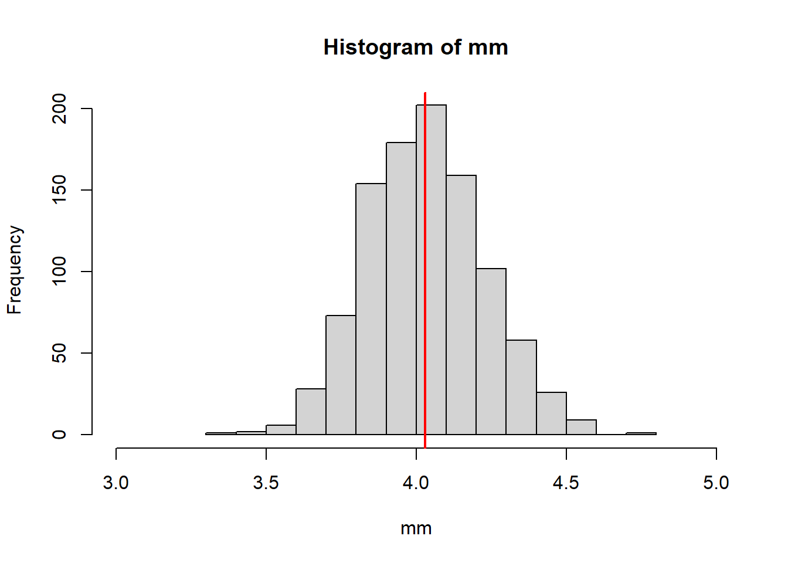
vx<-sum((xx-mean(xx))^2)/N
# la distribución teórica
curve(dnorm(x,mean(xx),sqrt(vx/n)),xlim = c(3,5))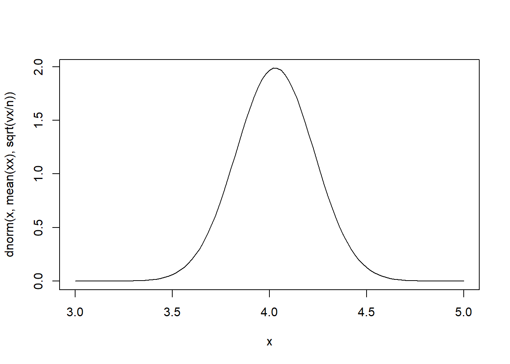
# de forma gráfica
hist(mm,xlim = c(3,5),freq = F)
curve(dnorm(x,mean(xx),sqrt(vx/n)),add=T,col="red",lwd=2)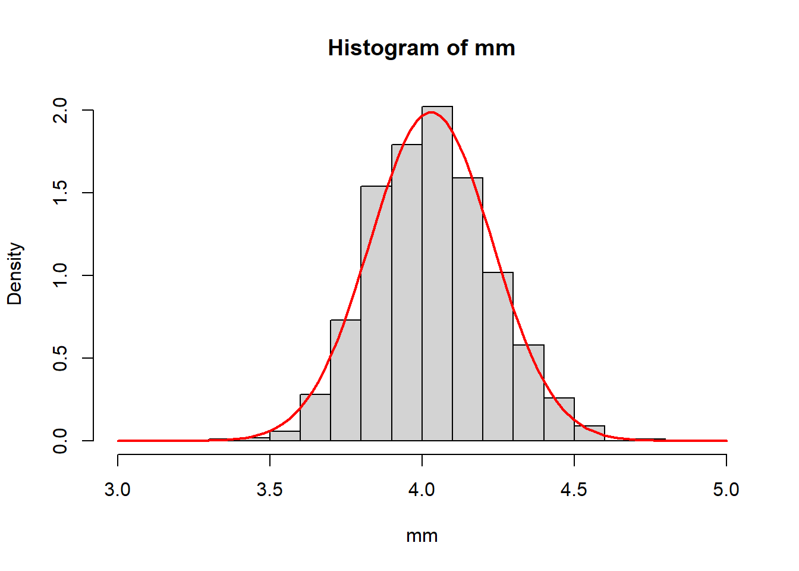
Nota: El teorema del limite central supone poblaciones grandes (“infinitas”)
Nota: Cuando las poblaciones son pequeñas el teorema del limite central se puede seguir usando, sin embargo, la convergencia a la normalidad no estan fina
4.4 Distribución muestral de la media para muestras de 30 o más
Sea \(\bar{x}\) la media muestral un estimador para la media poblacional \(\mu_x\).
A partir del teorema de limite central y tomando en cuenta \(n\geq 30\). Se puede definir a su distribución muestral como:
\[\bar{X} \sim N\left(\mu_x,\frac{\sigma_x^2}{n}\right)\approx N\left(\bar{x},\frac{s^2}{n} \right)\]
De manera general para la distribución de la media muestral podemos mencionar lo siguiente:
- Es un estimador insesgado, de tal forma que \(E[\bar{x}]=\mu\)
- La variabilidad de la media muestra es:
\[V(\bar{x})=\sigma^2_{\bar{x}}=\frac{\sigma^2}{n}\]
- La estimación de la varianza viene dada por:
\[s^2_{\bar{x}}=\frac{s^2}{n}\]
Este último resultado también se denomina el error estándar del estimador de la media cuando:
\[s_{\bar{x}}=\sqrt{\frac{s^2}{n}}=EE(\bar{x})\]
Ejercicio 1:
Se tiene el dato del peso medido en kg. de una muestra de 9 animales:
4.0, 4.3, 4.5, 4.6, 4.7, 4.8, 4.9, 4.9, 5.1.
Obtener la media muestral y el error estándar.
Solución:
\[\bar{x}=\frac{\sum_s x_i}{n}=\frac{41.8}{9}=4.64\]
Para el error estándar:
\[s^2=\frac{\sum_s (x_i-\bar{x})^2}{n-1}=0.1153\]
La varianza del estimador:
\[s^2_{\bar{x}}=\frac{0.1153}{9}=0.0128\]
Finalmente el error estándar es:
\[s_{\bar{x}}=\sqrt{0.0128}=0.1132\]
4.5 Intervalo de confianza, límites de confianza
Una segunda forma de aproximarse al valor real de un parámetro poblacional, es mediante un intervalo de confianza que brinda limites en los que se encuentra el verdadero valor del parámetro a un nivel determinado de confiabilidad. En términos de probabilidades, el objetivo es determinar:
\[P(L<\theta<U)=1-\alpha=\text{Nivel de confiabilidad}\] El valor \(\alpha\) se conoce como la significancia y sus valores más usuales son de \(0.01, 0.05,0.1\), que respectivamente representan el 99%, 95% y 90% de confiabilidad.
El objetivo ahora es determinar la forma de los límites \(L=Lower\) y \(U=Upper\), esto depende del estimador con el que se trabaje, para el estimador de la media, si usamos el teorema del límite central sabemos que:
\[\bar{X} \sim N\left(\mu_x,\frac{\sigma_x^2}{n}\right)\] Ahora, si realizamos una transformación:
\[Z=\frac{\bar{X}-\mu_x}{\frac{\sigma_x}{\sqrt{n}}}\sim N(0,1)\] Por ejemplo, para un \(\alpha=0.05\)
\[P(-z_{0.05/2}<Z<z_{0.05/2})=0.95 \quad(95\%)\]
De esta forma, el intervalo de confianza de la media es:
\[IC_{1-\alpha}(\mu): \bar{x} \pm z_{\alpha/2} *\frac{S}{\sqrt{n}}\] > Nota:
Esta formula se aplica usando las información de la muestra, en algunos casos es posible contar con la varianza original de los datos \(\sigma^2\), si esto sucede la formula es:
\[IC_{1-\alpha}(\mu): \bar{x} \pm z_{\alpha/2} *\frac{\sigma}{\sqrt{n}}\]
Los valores más comunes para confiabilidad son:
- 99% de confiabilidad: \(z_{\alpha/2}=2.58\)
- 95% de confiabilidad: \(z_{\alpha/2}=1.96\)
- 90% de confiabilidad: \(z_{\alpha/2}=1.64\)
Ejercicio: (Capitulo 6, ejericio 6.)
El tiempo de incubación de huevos de lagarto fue medido para 24 lagartos. Estos 24 lagartos provienen de una población que tiene un \[\sigma^2=89.06 días^2\] Y la media muestral \[\bar{x}=61.4 días\]
- Calcular el IC al 99% para la media de incubación
- Calcular el IC al 95% para la media de incubación
- Calcular el IC al 90% para la media de incubación
Solución
Al 99%,
\[IC_{1-\alpha}(\mu): 61.4 \pm 2.58 *\sqrt{\frac{89.06}{24}}=61.4 \pm 4.97=\] \[IC_{99\%}(\mu): [56.43 \quad 66.37]\]
Al 95%,
\[IC_{1-\alpha}(\mu): 61.4 \pm 1.96 *\sqrt{\frac{89.06}{24}}=61.4 \pm 3.78=\]
\[IC_{95\%}(\mu): [57.62 \quad 65.18]\]
Al 90%,
\[IC_{1-\alpha}(\mu): 61.4 \pm 1.64 *\sqrt{\frac{89.06}{24}}=61.4 \pm 3.16=\]
\[IC_{90\%}(\mu): [58.24 \quad 64.56]\]
Como un caso particular de la media se tiene a la proporción, esto ocurre cuando los datos son dicotómicos/binarios. Es decir:
\[\bar{x}=\hat{P}_a=\frac{\sum_s x_i}{n}=\frac{\#a}{n}\]
\[\hat{P} \sim N\left(P,\frac{\sigma_p^2}{n}\right)=N\left(P,\frac{P(1-P)}{n}\right)\]
\[\sigma^2_p=\frac{\sum_U x_i^2}{N}-\mu^2=\frac{\sum_U x_i}{N}-P^2=P-P^2=P(1-P)\]
La proporción mide la participación de una característica dentro de la población/muestra. Por ejemplo
- Proporción de mujeres
\[P_{m}=\frac{14}{24}=0.58 \rightarrow 58\%\]
- Proporción de hombres
\[P_{h}=\frac{10}{24}=0.42 \rightarrow 42\%\]
De esta forma, el intervalo de confianza para la proporción queda de la forma:
\[IC_{1-\alpha}(P): \hat{P} \pm z_{\alpha/2} *\sqrt{\frac{\hat{P}(1-\hat{P})}{n}}\]
Ejemplo:
Se toma una muestra aleatoria de 35 cachorros y sobre este grupo se evidencia que 23 de ellos cuentan con sus vacunas respectivas. Calcule un intervalo de confianza al 95% para la proporción de cachorros sin vacunas. Si la muestra fue obtenida de un albergue de 200 cachorros, ¿cuál será el intervalo de confianza para el total de cachorros sin vacunas.?
Solución, como información \(n=35\), \(N=200\), 23 tienen vacunas.
\[\hat{P}_{sv}=\frac{12}{35}\]
\[IC_{1-\alpha}(P):\frac{12}{35} \pm 1.96 *\sqrt{\frac{\frac{12}{35}*\frac{23}{35}}{35}}=0.34 \pm 0.16\]
\[IC_{95\%}(P): [0.18 \quad 0.5] \rightarrow (\%)[18 \quad 50]\]
Una ventaja de la proporción es que se encuentra en unidades relativas, para expandir sus resultados a una población mayor bastara con multiplicar por el tamaño de la población.
\[IC_{95\%}(T=P*N): 200*([0.18 \quad 0.5]) \rightarrow [36 \quad 100]\]
Ejercicio
Se realizó la toma de muestra de 45 palomas de la plaza Murillo un día cualquiera, se identificó a 31 palomas con alguna dificultad/dolencia en alguna de sus patas.
- Calcular el intervalo de confianza al 95% de confiabilidad para la proporción de palomas con problemas en alguna de sus patas.
- Si suponemos que la población de palomas alrededor de la plaza Murillo ronda las 7000 palomas, ¿cuál será el intervalo de confianza al 95% de confiabilidad del total de palomas sin problemas en sus patas?
Solución, \(n=45\) 31 palomas con dificultades en sus patas, 14 palomas sin dificultades.
\[\hat{P}_{cd}=\frac{31}{45}=0.69; \quad \hat{P}_{sd}=\frac{14}{45}=0.31\]
\[IC_{1-\alpha}(P_{cd}): 0.69 \pm 1.96 *\sqrt{\frac{0.69*0.31}{45}}=0.69\pm 0.14=\] \[IC_{95\%}(P_{cd}): [0.55 \quad 0.83]\rightarrow (\%)[55 \quad 83]\]
\[IC_{1-\alpha}(P_{sd}): 0.31 \pm 1.96 *\sqrt{\frac{0.69*0.31}{45}}=0.31\pm 0.14=\]
\[IC_{95\%}(T_{sd}=N*P_{sd}):7000( [0.17 \quad 0.45]) \rightarrow [1190 \quad 3150]\]
4.6 pruebas de hipótesis
El principal objetivo de la inferencia estadística es aproximarse al valor del parámetro \(\theta\) de la población (\(U\)), mediante un estimador \(\hat{\theta}\) que viene definido por una muestra aleatoria (\(s\)).
Las estrategias de estimación vistas hasta ahora son:
- Estimación puntual:
\[\mu=\frac{\sum_U x_i}{N} \rightarrow \bar{x}=\frac{\sum_s x_i}{n}\]
- Estimación por intervalo de confianza
\[IC_{1-\alpha}(\mu): \bar{x}\pm z_{\alpha/2}\sqrt{\frac{\hat{S}^2}{n}}\]
Ahora veremos las pruebas de hipótesis estadísticas, estas pruebas partes de una conjetura nuestra al rededor del parámetro de interés y esta conjetura es verificada mediante la información de la muestra.
Cuando se elabora una hipótesis estadística se debe plantear 2 elementos; la hipótesis que se plantea (hipótesis nula) y el complemento de esta hipótesis planteada se denomina hipótesis alternativa. Ejemplo
\[H_0: \theta = k\] \[H_1: \theta \neq k\] \[H_1: \theta > k\] \[H_1: \theta < k\] Ejemplo, se observa a los estudiantes inscritos en la materia de estadística mediante una muestra de 10 estudiantes. Si la variable de interés es la estatura en centímetros
\[H_0: \mu = 165\] \[H_1: \mu< 165\]
La manera de verificar la hipótesis planteada pasara por estudiar una muestra aleatoria, sobre la cual se pueda establecer una regla que nos permita decidir si la hipótesis es correcta o no. Normalmente se inicia calculando un estadístico de prueba que nos permitirá decidir con base a una regla definida en una región de aceptación.
Al momento de tomar una decisión con base al estadístico de prueba y las regiones de aceptación y rechazo empleando la información de la muestra, es posible cometer errores dado el resultado real en \(U\). En las pruebas de hipótesis existen dos tipos de errores, el error de tipo I y el error de tipo II:
- Error de tipo I: (\(\alpha\)) también conocido como un falso positivo. Rechazar algo verdadero
- Error de tipo II: (\(\beta\)) también conocido como falso negativo. Aceptando algo falso
4.6.1 Pasos para una prueba de hipótesis
- Establecer la hipótesis nula (\(H_0\)) y la hipótesis alternativa (\(H_1\), \(H_A\)). La \(H_A\) puede ser de dos o una cola
- Definir el nivel de significancia \(\alpha\). (el tamaño de la región de rechazo)
- Recolectar los datos de la muestra y calcular el estadístico de prueba (\(Z\)).
- Comparar el estadístico de prueba según las regiones críticas, esto es, la región de aceptación y la región de rechazo + \(Z \in RA \rightarrow \sim RH_0 (AH_0)\) + \(Z \notin RA \rightarrow RH_0\)
- Calcular el P-valor. “La probabilidad que la hipótesis nula sea verdadera”. Tradicionalmente: + \(P-valor>\alpha \rightarrow \sim RH_0 (AH_0)\) + \(P-valor<\alpha \rightarrow RH_0\)
- Calcular el intervalo de confianza del parámetro de estudio
- Realizar las conclusiones respectivas y analizar los resultados.
4.6.2 Prueba de hipótesis para la media
Vamos a suponer que los datos de interés se distribuyen como una normal o al menos que el tamaño de muestra (\(n\)), de la muestra aleatoria para el estadístico de prueba es grande. Por lo tanto es posible utilizar el teorema del limite central. Existen dos variaciones de la prueba de hipótesis sobre la media; cuando se conoce la varianza y cuando no se conoce la varianza de los datos (\(\sigma^2\)).
4.6.2.1 Con varianza \(\sigma^2\) conocida
- Hipótesis
\[H_0: \mu=\mu_0\]
\[H_A: \mu \neq \mu_0\] 2. Nivel de significancia: Este es \(\alpha\) y el tipo de prueba dado la \(H_A\) es bilateral o de dos colas, esto significa que existen dos regiones de rechazo, cada región de tamaño \(\alpha/2\) 3. Estadístico de prueba: Se cuenta con una muestra aleatoria (\(X_1,X_2,\ldots,X_n\)) estas son independientes e idénticamente distribuidas. La estadística de prueba es:
\[Z_0=\frac{\bar{x}-\mu_0}{\frac{\sigma}{\sqrt{n}}}\]
Si la hipótesis nula es cierta entonces se puede garantizar que \(Z_0\sim N(0,1)\), esto significa que:
\[E[\bar{x}]=\mu=\mu_0\] 4. Regiones de aceptación y rechazo: dependen del nivel de significancia \(\alpha\)
# alpha=0.1 (10%)
curve(dnorm(x),xlim = c(-4,4),main="Significancia al 10%")
abline(v=c(-1.64,1.64),col="red",lty=2)
text(c(-3.5,0,3.5),rep(0.2,3),c("Rechazo","Aceptación","Rechazo"))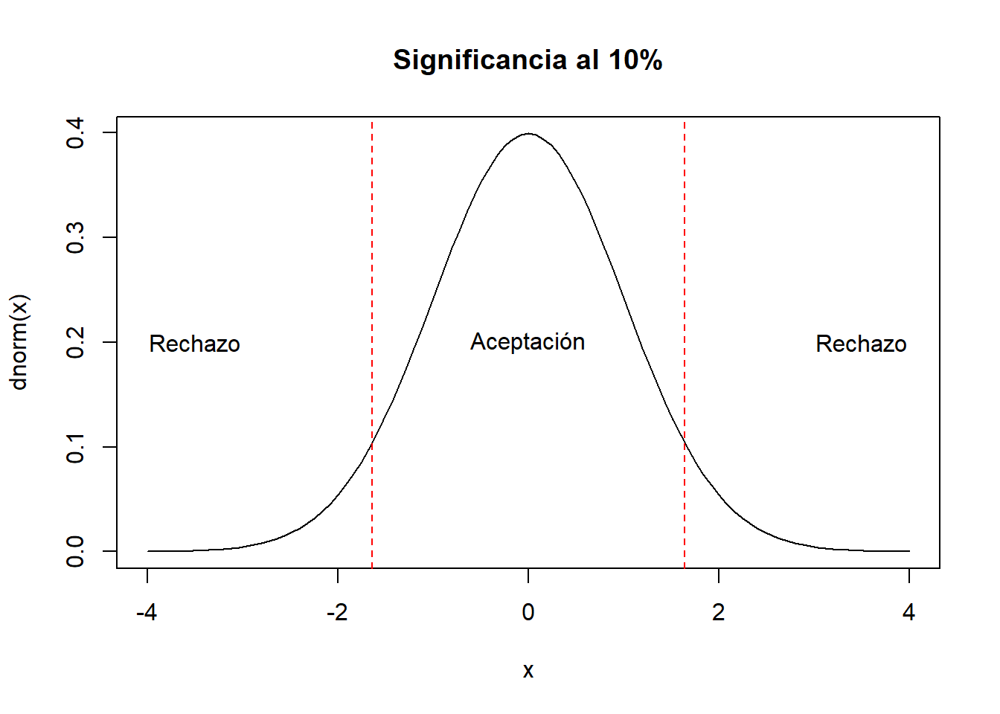
# alpha=0.05 (5%)
curve(dnorm(x),xlim = c(-4,4),main="Significancia al 5%")
abline(v=c(-1.96,1.96),col="red",lty=2)
text(c(-3.5,0,3.5),rep(0.2,3),c("Rechazo","Aceptación","Rechazo"))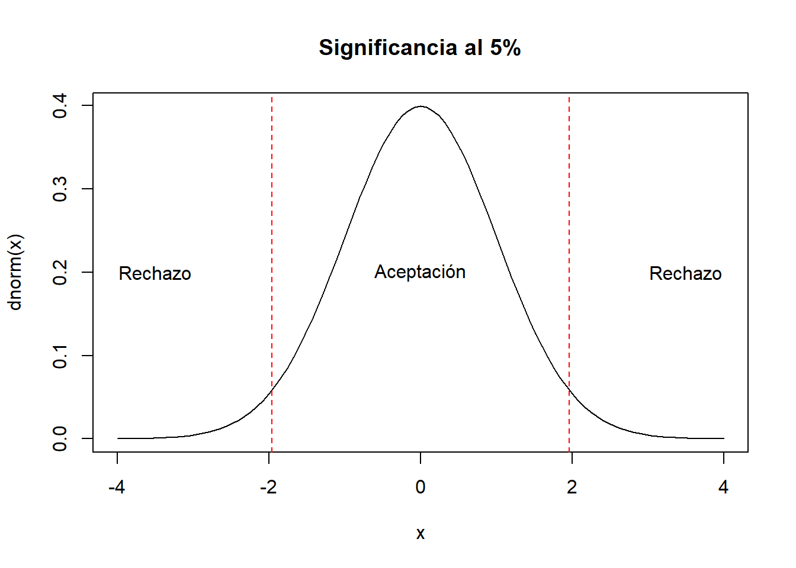
# alpha=0.01 (1%)
curve(dnorm(x),xlim = c(-4,4),main="Significancia al 1%")
abline(v=c(-2.58,2.58),col="red",lty=2)
text(c(-3.5,0,3.5),rep(0.2,3),c("Rechazo","Aceptación","Rechazo"))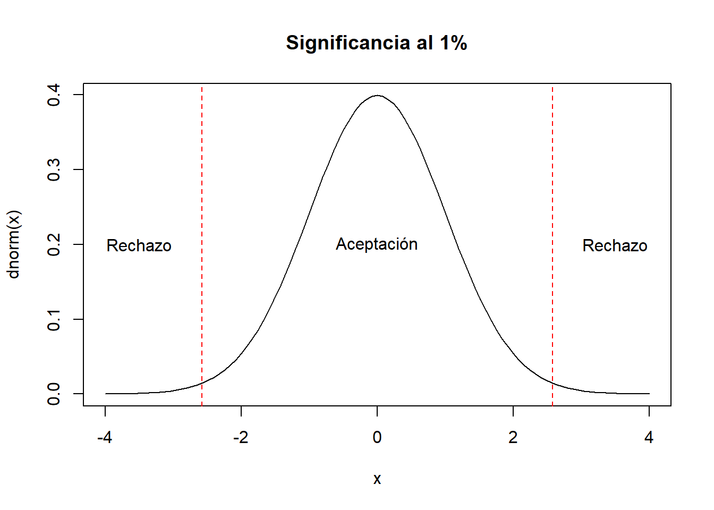
- La decisión; Se rechaza la \(H_0\) cuando:
\[Z_0> Z_{\alpha/2} \quad ó \quad Z_0< -Z_{\alpha/2}\]
Los valores más usuales para el \(Z_{\alpha/2}\) son:
- al 10% de significancia \(Z_{\alpha/2}=Z_{0.05}=1.64\)
- al 5% de significancia \(Z_{\alpha/2}=Z_{0.025}=1.96\)
- al 1% de significancia \(Z_{\alpha/2}=Z_{0.005}=2.58\)
Ejercicio, se tiene un curso de estadística con su evaluación final sobre 100 puntos, se sabe por información pasada que la desviación estándar es alrededor de 10 pts. Se debe probar la hipótesis que el grupo tiene una nota promedio de 65 pts, tomar un nivel de significancia del 5%. Para realizar la prueba se obtuvo una muestra de 20 estudiantes, con las siguientes mediciones:
set.seed(905)
x<-round(runif(20,45,75))
x## [1] 75 72 56 47 64 63 64 66 51 67 75
## [12] 51 53 69 66 57 70 63 51 50\[H_0: \mu= 65\] \[H_A: \mu\neq 65\]
\[Z_0=\frac{\bar{x}-\mu_0}{\frac{\sigma}{\sqrt{n}}}=\frac{61.5-65}{\frac{10}{\sqrt{20}}}=-1.565\] La decisión, si se cumple alguna de las siguientes desigualdades se rechaza la hipótesis nula:
\[-1.565> 1.96 (F) \quad ó \quad -1.565< -1.96 (F)\]
Por lo tanto, no se rechaza la hipótesis nula. De manera gráfica:
# alpha=0.05 (5%)
curve(dnorm(x),xlim = c(-4,4),main="Significancia al 5%")
abline(v=c(-1.96,1.96),col="red",lty=2)
text(c(-3.5,0,3.5),rep(0.2,3),c("Rechazo","Aceptación","Rechazo"))
abline(v=-1.565,col="blue",lty=3)
text(x=-1.565,y=0.05,"Z0")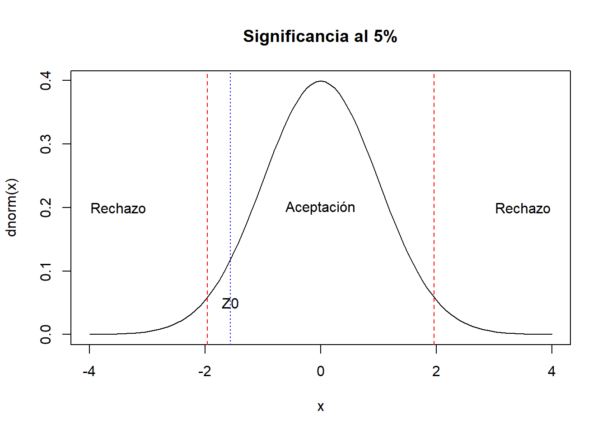
4.6.2.1.1 Para pruebas unilaterales
Se utiliza el mismo estadístico de prueba \(Z_0\), lo que se modifica son las regiones críticas.
\[H_A: \mu>\mu_0\] Se rechaza \(H_0\) si:
\[Z_0>Z_{\alpha}\] En el otro caso:
\[H_A: \mu<\mu_0\] Se rechaza \(H_0\) si:
\[Z_0< -Z_{\alpha}\] Los valores mas usuales de \(Z_\alpha\) para pruebas unilaterales son:
- 10% \(Z_{0.1}=1.28\)
- 5% \(Z_{0.05}=1.64\)
- 1% \(Z_{0.01}=2.33\)
# "<"
curve(dnorm(x),xlim = c(-4,4),main="Pruebas unilaterales <")
abline(v=c(-1.28,-1.64,-2.33),col="red",lty=2)
text(c(-3.5,2),rep(0.2,2),c("Rechazo","Aceptación"))
text(c(-1.28,-1.64,-2.33),y=0.3,c("10%","5%","1%"),cex=0.8)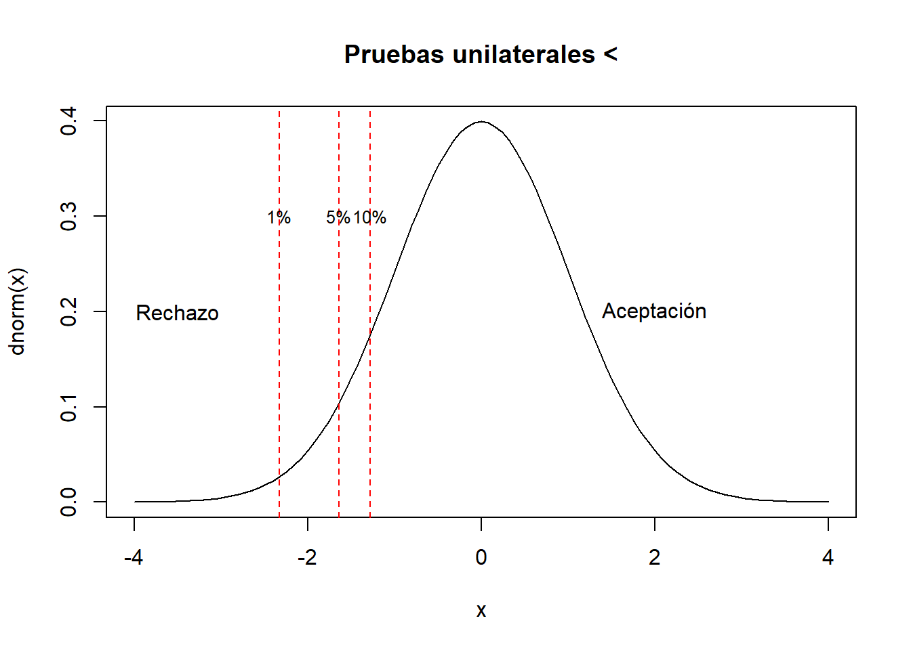
# ">"
curve(dnorm(x),xlim = c(-4,4),main="Pruebas unilaterales >")
abline(v=c(1.28,1.64,2.33),col="red",lty=2)
text(c(-2,3.5),rep(0.2,2),c("Aceptación","Rechazo"))
text((-1)*c(-1.28,-1.64,-2.33),y=0.3,c("10%","5%","1%"),cex=0.8)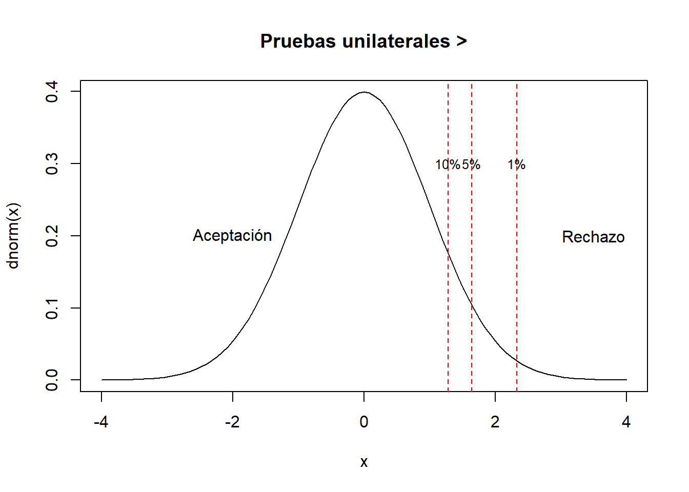
4.6.2.2 Con varianza desconocida
Si el tamaño de muestra es mayor a 30, todo lo visto anteriormente se mantiene, el único cambio se da en el estadístico de prueba, donde en lugar de \(\sigma\) se toma la variabilidad muestral (\(\hat{S}\)). Es decir:
\[\sigma^2=\frac{\sum_U (x_i-\mu)^2}{N}\]
\[\hat{S}^2=\frac{\sum_s (x_i-\bar{x})^2}{n-1}\]
Esto implica que:
\[Z_0=\frac{\bar{x}-\mu_0}{\frac{\hat{S}}{\sqrt{n}}}\]
Si la muestra no es mayor a 30, podemos hacer un supuesto de normalidad y la aproximación para las regiones críticas se la trabaja con la distribución \(t-student\)
curve(dnorm(x),xlim=c(-4,4),lwd=2)
for(i in 1:30){
curve(dt(x,i),xlim=c(-4,4),lty=2,col="red",add=T)
}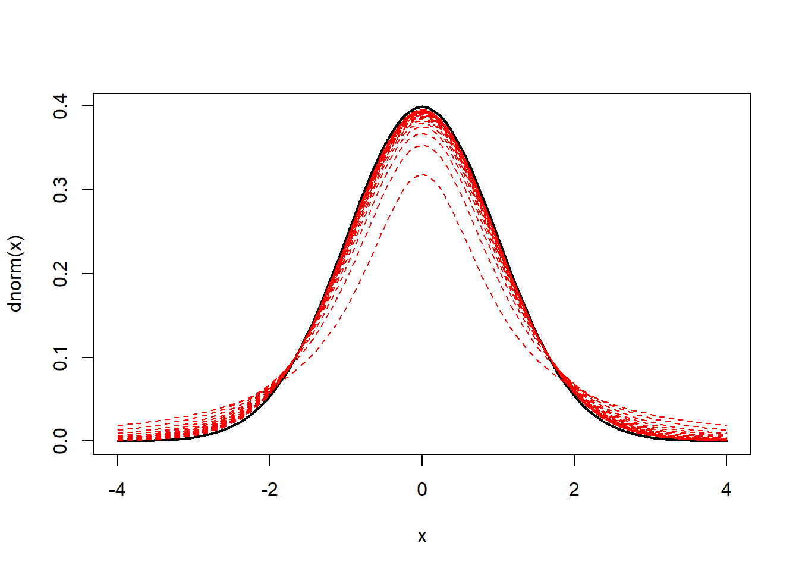
Hasta ahora se tienen 3 casos para la prueba de hipótesis sobre la media.
\[H_0: \mu=\mu_0\]
- Cuando la varianza es conocida, se utiliza la distribución normal y el estadístico de prueba es:
\[Z_0=\frac{\bar{x}-\mu_0}{\frac{\sigma}{\sqrt{n}}}\] \[Z_0\sim N(0,1)\] Para:
\[H_A: \mu \neq\mu_0\] Se rechaza la \(H_0\) cuando:
\[Z_0 < -Z_{\alpha/2}\quad ó \quad Z_0 > Z_{\alpha/2}\]
\[H_A: \mu <\mu_0\] Se rechaza la \(H_0\) cuando:
\[Z_0 < -Z_{\alpha}\]
\[H_A: \mu >\mu_0\] Se rechaza la \(H_0\) cuando:
\[Z_0 > Z_{\alpha}\]
- Cuando la varianza es desconocida y la muestra es mayor a 30, se utiliza la distribución normal y el estadístico de prueba es:
\[Z_0=\frac{\bar{x}-\mu_0}{\frac{\hat{S}}{\sqrt{n}}}\]
\[Z_0\sim N(0,1)\]
Para:
\[H_A: \mu \neq\mu_0\] Se rechaza la \(H_0\) cuando:
\[Z_0 < -Z_{\alpha/2}\quad ó \quad Z_0 > Z_{\alpha/2}\]
\[H_A: \mu <\mu_0\] Se rechaza la \(H_0\) cuando:
\[Z_0 < -Z_{\alpha}\]
\[H_A: \mu >\mu_0\] Se rechaza la \(H_0\) cuando:
\[Z_0 > Z_{\alpha}\]
- Cuando la varianza es desconocida y la muestra es menor o igual a 30, se utiliza la distribución t-student y el estadístico de prueba es:
\[t_0=\frac{\bar{x}-\mu_0}{\frac{\hat{S}}{\sqrt{n}}}\]
\[t_0\sim t(v=n-1)\]
Para:
\[H_A: \mu \neq\mu_0\] Se rechaza la \(H_0\) cuando:
\[t_0 < -t_{\alpha/2,n-1}\quad ó \quad t_0 > t_{\alpha/2,n-1}\]
\[H_A: \mu <\mu_0\] Se rechaza la \(H_0\) cuando:
\[t_0 < -t_{\alpha,n-1}\]
\[H_A: \mu >\mu_0\] Se rechaza la \(H_0\) cuando:
\[t_0 > t_{\alpha,n-1}\]
Ejemplo, Se tiene el peso en kilogramos de una muestra aleatoria de tamaño 5 de un determinado animal, estos datos son: 4.5, 6.7, 5.0, 4.0 y 6.1. Se piensa que estos animales tienen problemas de nutrición y se busca verificar esto mediante la muestra recolectada. Se acepta que existen problemas de nutrición si el peso es inferior a 4.2 kg. Realice la prueba de hipótesis correspondiente para verificar esto.
Solución,
\[H_0: \mu=4.2 \quad ; \quad H_A: \mu<4.2\]
\[t_0=\frac{\bar{x}-\mu_0}{\frac{\hat{S}}{\sqrt{n}}}=\frac{5.26-4.2}{\frac{1.12}{\sqrt{5}}}=2.12\]
(Vamos a utilizar un nivel de significancia del 5%) Se rechaza la \(H_0\) cuando la siguiente desigualdad se cumpla:
\[2.12 < -t_{0.05,4}=-2.1318\]
Por lo tanto, como no se cumple la desigualdad, se concluye que no existe evidencia estadística suficiente para rechazar la hipótesis nula. Esto implica que posiblemente la población de animales estudiados no tengan problemas de nutrición.
Ejercicio, Se considera que un determinado fruto esta maduro cuando su árbol supera la altura de 175 centímetros, para verificar si ya se puede cosechar la fruta se toma una muestra aleatoria de 7 árboles, teniendo los siguientes resultados: 140, 200, 178, 167, 170, 180, 192. ¿Será que ya se puede realizar la cosecha?
Solución,
\[H_0: \mu=175 \quad ; \quad H_A: \mu>175\]
\[t_0=\frac{\bar{x}-\mu_0}{\frac{\hat{S}}{\sqrt{n}}}=\frac{175.29-175}{\frac{19.41}{\sqrt{7}}}=0.0395\]
Se rechaza la \(H_0\) cuando se cumple la siguiente desigualdad:
\[t_0 > t_{0.05,6}\] Suponiendo un \(\alpha=0.05\) (5%)
\[0.0395 > 1.9432 (F)\] Por lo tanto, como la desigualdad no se cumple; no es posible rechazar la hipótesis nula, esto implica que no se recomienda iniciar con la cosecha.
4.6.3 Tamaño de muestra a partir del margen de error
Recordar el intervalo de confianza de la media:
\[\bar{x} \pm z_{\alpha/2}\frac{\sigma}{\sqrt{n}}\quad ; \quad \bar{x} \pm \epsilon\]
Imaginemos que queremos controlar el ancho del intervalo de confianza, a ese ancho lo vamos a denominar margen de error (\(\epsilon\)), entonces:
\[\epsilon=z_{\alpha/2}\frac{\sigma}{\sqrt{n}}\]
Ahora, es posible delimitar a priori el margen de error, el nivel de confiabilidad y aproximar \(\sigma\) con base a un estudio pasado o una prueba piloto. De esta forma es posible tener una formula para el tamaño de muestra \(n\), en función de \(\epsilon\), \(z_{\alpha/2}\) y \(\sigma\). Esta es:
\[n=\left(\frac{z_{\alpha/2}* \sigma}{\epsilon}\right)^2\approx \left(\frac{z_{\alpha/2}* \hat{\sigma}}{\epsilon}\right)^2\]
Ejemplo, para el caso de los árboles y la cosecha, calcular el tamaño de muestra necesario si se fija un margen de error de 5 cm, un nivel de confiabilidad del 95%, usar como aproximación de \(\sigma\) el dato de los 7 árboles.
\[n= \left(\frac{z_{\alpha/2}* \hat{\sigma}}{\epsilon}\right)^2=\left(\frac{1.96* 19.41}{5}\right)^2=57.89\approx58\]
4.6.4 Tamaño de muestra a partir de los errores de tipo I y II
Cuando se trabaja con tamaños de muestra basados en los errores de tipo I y II, se debe predefinir 3 aspectos:
- El tamaño del error de tipo I: \(\alpha\), \(0.01, 0.05, 0.1\)
- El tamaño del error de tipo II: \(\beta\), \(0.1, 0.2\)
- Efecto de tamaño:
\[\delta=|\mu_0-\mu_A|\]
\[n=\left[\frac{\hat{\sigma} *(z_{\alpha}+z_\beta)}{\delta}\right]^2=\frac{\hat{\sigma}^2 *(z_{\alpha}+z_\beta)^2}{\delta^2}\]
Los valores más comunes:
- \(z_{\alpha=0.05}=1.64\)
- \(z_{\alpha=0.01}=2.33\)
- \(z_{\alpha=0.1}=1.28\)
- \(z_{\beta=0.1}=1.28\)
- \(z_{\beta=0.2}=0.84\)
Ejemplo
¿Cuán grande debe ser el tamaño de muestra si de define un nivel de significancia del 5%, un error de tipo II del 10%, debiendo detectar una diferencia al promedio de al menos 1. Teniendo una varianza de 1.57.
Solución, \(\delta=1\)
\[n=\frac{\hat{\sigma}^2 *(z_{\alpha}+z_\beta)^2}{\delta^2}=\frac{1.57 *(1.64+1.28)^2}{1}=13.38\approx 14\]
Ejercicio
Para el ejemplo de los árboles, se sabe que \(\hat{\sigma}=19.41\), si se quiere obtener el tamaño de muestra necesario tomando en cuenta una distancia mínima de 5 centímetros. Calcular el tamaño de muestra necesario, tomar un \(\alpha\) del 5% y un \(\beta\) del 20%.
\[n=\left[\frac{\hat{\sigma} *(z_{\alpha}+z_\beta)}{\delta}\right]^2=\left[\frac{19.41 *(1.64+0.84)}{5}\right]^2=92.69\approx 93\]
- \(z_{\alpha=0.05}=1.64\)
- \(z_{\alpha=0.01}=2.33\)
- \(z_{\alpha=0.1}=1.28\)
- \(z_{\beta=0.1}=1.28\)
- \(z_{\beta=0.2}=0.84\)
\[n=\left[\frac{(z_{\alpha}+z_\beta)}{\frac{\delta}{\hat{\sigma}}}\right]^2\]
\[EMD=\frac{\delta}{\hat{\sigma}}=\frac{|\mu_0-\mu_A|}{\hat{\sigma}}\] Se conoce como el efecto mínimo detectable, que mide la diferencia entre en términos de desviaciones estándar. Existen valores sugeridos para este EMD, varían de 0.15 a 0.25.